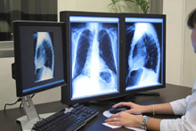

Santa Casa da Misericórdia de Leiria
Meios Complementares de Diagnóstico e Terapêutica
Nome de Utilizador
Password
Meios Complementares de Diagnóstico e Terapêutica
Telefone geral: 244 106 203
Para marcações – número directo 244 106 201

2014 Instituto Politécnico de Leiria Escola Superior de Tecnologia e Gestão • Desenvolvido por: Alexandre Olival, António Gonçalves, Elmar Spencer